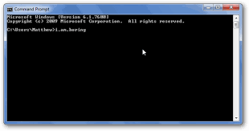

First Python Programs
 |
|
|
Aims
- Start up Python
- Do basic maths
- Create a Graph
Reuse

This work is licensed under a Creative Commons Attribution-NonCommercial-ShareAlike 4.0 International License.
http://creativecommons.org/licenses/by-nc-sa/4.0/deed.en_USThis means you are free to copy and redistribute the material and adapt and build on the material under the following terms: You must give appropriate credit, provide a link to the license and indicate if changes were made. If you adapt or build on the material you must distribute your work under the same license as the original.
Note that this presentation contains images owned by others. Please seek their permission before reusing these images.
Not just a snake
Python is a programming language which is used in many different applications.
It is used in science, data analysis, games and for automating tasks.
Users of ARCHER often use it to automate tasks, prepare data or to visualise results.
A Command Prompt
Most applications we use have Graphcial User Interfaces.
We are going to start with the command line Python.
We need to start a command prompt.
Commands
From the Start Menu:
- Go to Utilities and choose Command Prompt
- Choose Run and type cmd
- Go to Anaconda and choose Anaconda Prompt
This should start the command line.
Commands
Some basics
- Type "cd" - gives current location
- Type "mkdir python" - creates a directory
- Type "notepad firstfile.txt" - opens up an editor
- Type "dir" - lists your files
- Type "del firstfile.txt" - deletes your file
Starting Python
Type "python"
Python 2.7.12 |Anaconda custom (x86_64)| (default, Jul 2 2016, 17:43:17)
[GCC 4.2.1 (Based on Apple Inc. build 5658) (LLVM build 2336.11.00)] on darwin
Type "help", "copyright", "credits" or "license" for more information.
Anaconda is brought to you by Continuum Analytics.
Please check out: http://continuum.io/thanks and https://anaconda.org
>>>
This is the Python interpreter.
Type 2+3
Type hello
Type print 'hello'
Type a = 5
Type print a
Type a+5
Type b = [3,4,5]
Type sum(b)
Type len(b)
Type sum(b)/len(b)
Type import numpy as np
Type np.mean(b)
Type personname = raw_input("Enter your name: ")
Type print 'Hello, %s' % personname